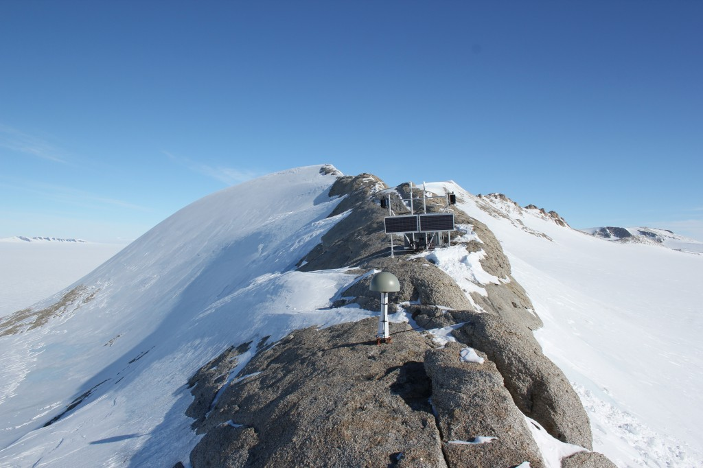

Back to all sites
Mount Suggs
| Station ID | SUGG |
|---|---|
| Coordinates | S 75.2806, W 72.1801 |
| Installed | 2007-2008 season |
| Former Projects | WAGN |
| Former Names | W08B |
| Transportation | Twin Otter |
| Nearest Hub | 565km to ALE Union Glacier Camp |

Coordinate: S 75.2806, W 72.1801
Closest operations HUB: 565km to ALE Union Glacier Camp
A mountain with a bare rock northern face, standing 2 mi S of Mount Goodman in the Behrendt Mountains, Ellsworth Land. Mapped by USGS from surveys and USN air photos, 1961-67. Named by US-ACAN for Henry E. Suggs, equipment operator of USN Mobile Construction Battalion One, who participated in the deployment to new Byrd Station, summer 1961-62 (https://data.aad.gov.au/aadc/gaz/scar/display_name.cfm?gaz_id=132317).